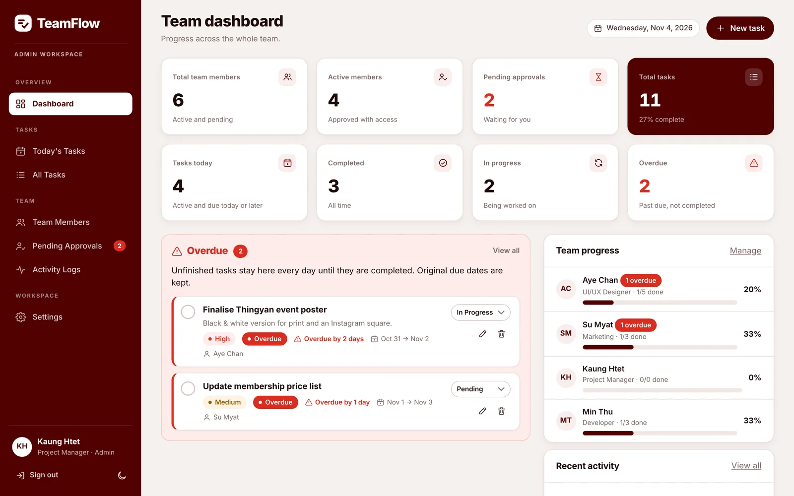
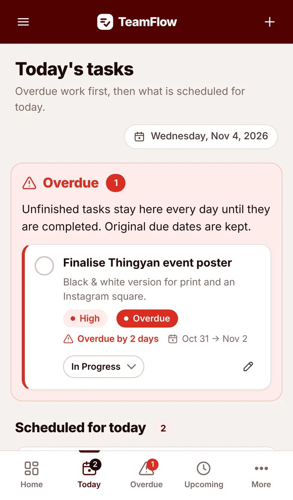
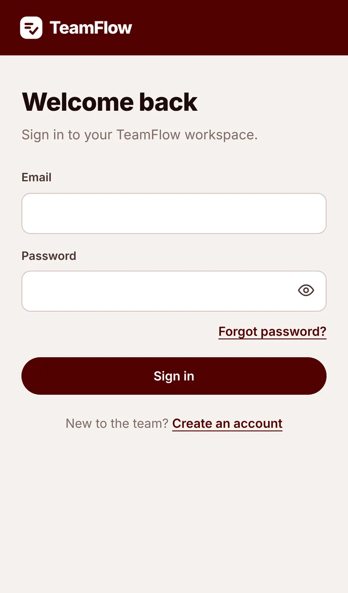
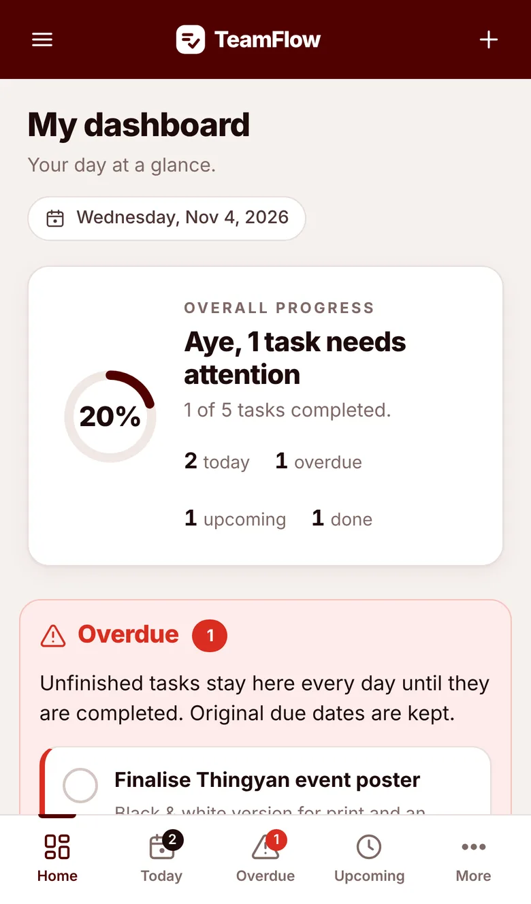
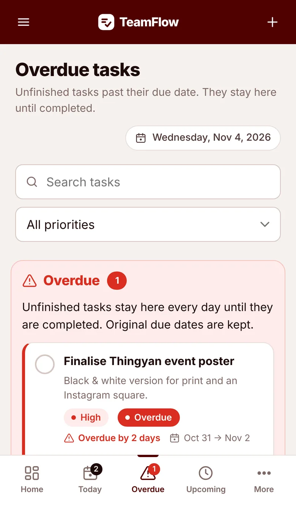
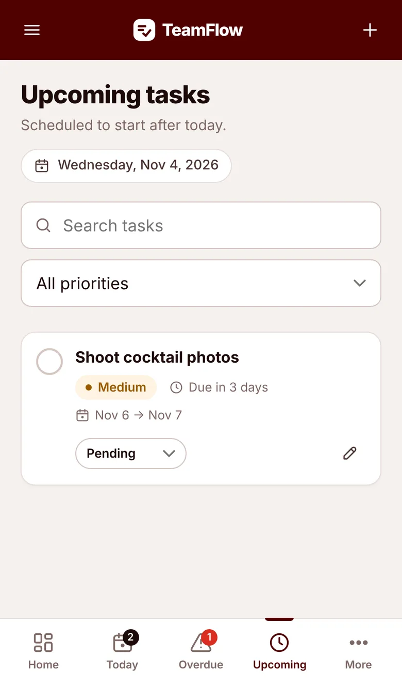
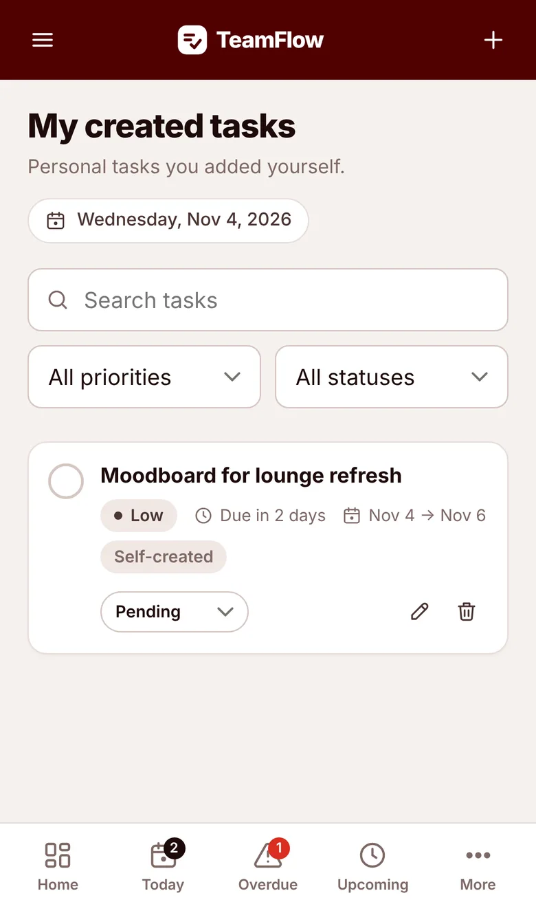
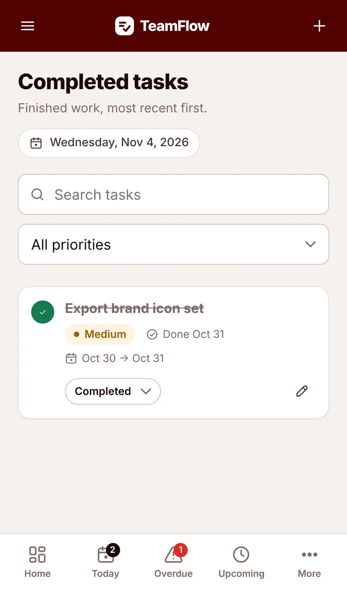
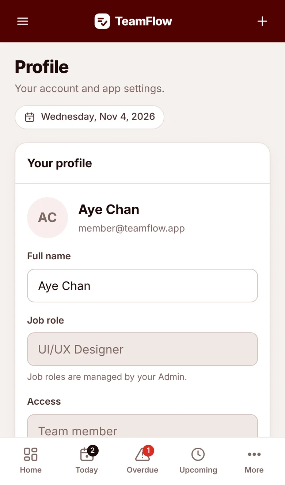

Overdue carry-over
Unfinished tasks reappear at the top of every following day, labelled "Overdue by N days", while keeping their original due date.
Case study · Web app & PWA · 2026
A daily task workspace for small teams. Admins assign work, members track their own, and anything unfinished keeps showing up as Overdue until it's done.


The problem
Many small teams hand out daily work over messaging apps. Nobody can see what's due today, what slipped yesterday, or how each person is progressing. Missed tasks simply disappear from view.
The design goal: one calm, brand-aligned workspace where every task has an owner and a date, and nothing unfinished can hide. Overdue work rolls forward every day — without copying the task or rewriting its original due date — so accountability stays honest.
Interface
Desktop-first control centre for the team lead. Pick a screen, then flip between light and dark.
Mobile
Built thumb-first for phones, with a bottom tab bar and installable from the home screen. Swipe or use the arrows.







What it does
Unfinished tasks reappear at the top of every following day, labelled "Overdue by N days", while keeping their original due date.
Admins assign tasks with a start date, due date and priority. Members can update status and add their own self-created tasks.
Email verification, profile setup, then an admin approval gate. Every permission is re-checked on the server, not just hidden in the UI.
Every create, edit, status change and approval is recorded, so the team lead can see who did what and when.
A Progressive Web App with home-screen icon, full-screen launch, safe-area aware layout and an offline shell on Android and iOS.
A full dark palette derived from the brand maroon, remembered per device, with accessible contrast in both modes.
Design system
A restrained palette — deep maroon, warm paper and a neutral scale. Colour is reserved for meaning: overdue, priority and done.
Tap a swatch to copy its hex.
Helvetica Neue / system stack · 800 for display, 600 for UI, tracked caps for labels.
Try the checkbox — the task card is a real, interactive component.
User flow
A gated onboarding path so only verified, approved people reach the team's data.
Email and password
Firebase link confirms ownership
Name and job role
Admin reviews the request
Admin or Member dashboard
How it's built
No frontend framework and no CDN — just HTML, CSS and ES modules, backed by serverless functions and a spreadsheet any team already knows how to read.
One rules.js module runs in both browser and API, so dates, timezones and permissions never disagree.
"Today" and "overdue" are computed in Asia/Yangon, not the server's clock — covered by automated tests.
Every request verifies the Firebase ID token; the spreadsheet is never public and is only touched by the server.
Designed and built end-to-end by Kaung Htet San.